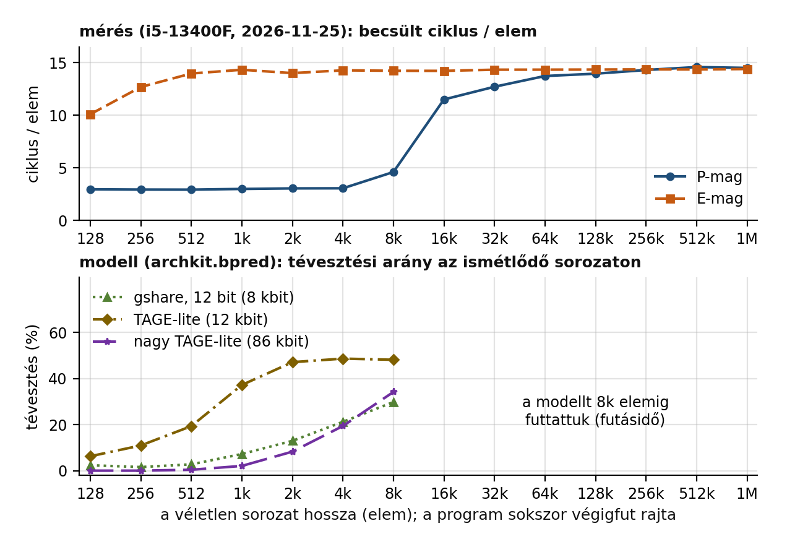
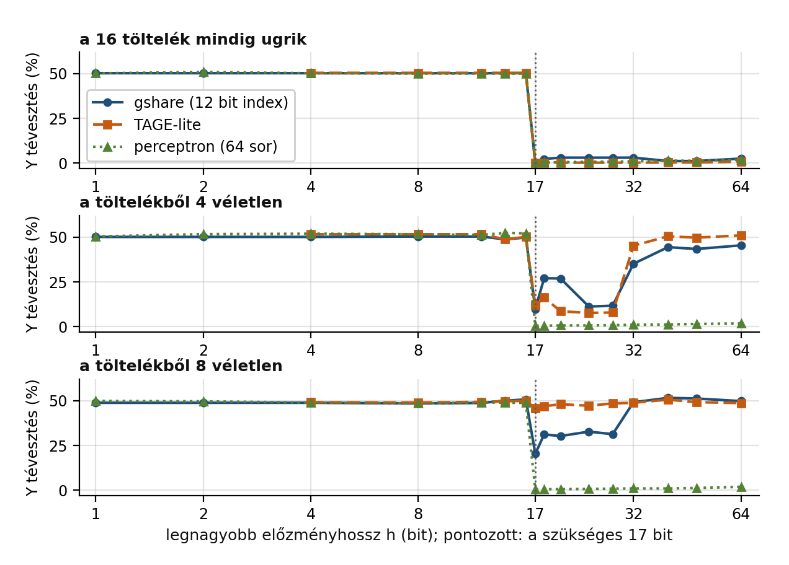

A labor P-magján ismételjünk újra és újra ugyanazt a véletlen 0/1
sorozatot a branchy ugró változatán. Ha a sorozat
legfeljebb 4096 elemes, elemenként kb. 3 ciklus telik el; 16 384 elemnél
már 11,5, nagyon hosszúnál 14. A sorozat „véletlen”, a P-mag mégis
megjegyzi több ezer döntését. Az E-mag ezt csak a
legrövidebb sorozatokon tudja részben.

A Korrelált és globális előzményű becslők alfejezet módszerei egyetlen, rögzített előzményhosszal dolgoznak. Rövid előzmény nem látja a távoli összefüggést, a hosszú viszont minden ugráshoz rengeteg mintát tanul, lassan melegszik be, és kiszorítja a többieket. A mai processzorok becslői két ötletre építenek: sok előzményhossz egyszerre (TAGE) és az előzmény súlyozott szavazása (perceptron). Az alsó grafikon figyelmeztet: a mi kis modelljeink sem hibátlanok, a valódi becslő jóval nagyobb és kifinomultabb.
Képzeljünk el egy szakértői bizottságot. Az első tag (a bázisbecslő) csak a PC-t látja, mint a Statikus becslés és a kétbites számláló alfejezet bimodális becslője. A következő kettő-négy tag egyre hosszabb múltat figyel: az egyik az utolsó 4, a másik az utolsó 16, a harmadik az utolsó 64 kimenetet. Egy tag csak akkor szólal meg, ha az adott helyzetet felismeri, azaz a saját táblájában a címke egyezik. A szót a leghosszabb múltat látó felismerő kapja. Ha valaki téved, egy még hosszabb emlékezetű tag felírja magának az esetet.
Kövesd a képen: ahogy a rövidebb tábla újra és újra hibázik a kilépésnél, a becslő a 24. elágazásra eljut oda, hogy a 8 bites tábla dönt, és eltalálja.
A perceptron-becslő másképp gondolkodik: minden előzménybit kap egy súlyt, és a becslés a súlyozott szavazat előjele. A bit, amelytől az elágazás függ, nagy súlyt gyűjt, a zajos bitek súlya nulla körül marad.
A TAGE (TAgged GEometric history length) [S-TAGE] darab címkézett táblát használ, az -edik tábla előzményhossza
azaz a hosszak mértani sorozatot alkotnak (a könyv
TageLite osztályának alapbeállítása
,
tehát
).
Így néhány táblával a rövid és a nagyon hosszú összefüggéseket egyaránt
le lehet fedni, a rövideknél sűrűbben, mert azok gyakoribbak.
| Mező | Bit | Szerepe |
|---|---|---|
| címke | (a modellben 8) | a helyzet azonosítója: PC és előzmény hasítása |
számláló ctr |
3 | 0–7; 4-től ugrik |
hasznosság u |
2 | mennyire érte meg eddig a bejegyzés |
A bejegyzés tehát nemcsak becsül, hanem azt is nyilvántartja, érdemes-e megtartani. Egy című elágazás az . tábla indexbitjét és a keresett címkét az előzmény legfrissebb bitjéből, -ből számolja:
Az index és a címke két különböző hajtogatásból készül, ezért két helyzet, amely egy indexre esik, többnyire különböző címkét ad.
ctr mezőjének felső bitje.u mezője nő, ha ő nyert, különben csökken.u = 0, kap új
bejegyzést: címke, ctr = 4 vagy 3 (a kimenet szerinti
gyenge állapot), u = 0.u értéke eggyel csökken. Időnként (a modellben
frissítésenként) minden u csökken, hogy a régi bejegyzések
ne ragadjanak be.A valódi TAGE ennél többet tud (például véletlenített foglalás, az „alternatíva jobb-e” számláló, hurokbecslő és statisztikai korrektor a TAGE-SC-L változatban; ezeket itt nem tárgyaljuk).
A PC egy súlyvektort választ: (előjeles, 8 bites egészek). Az előzmény -edik bitjéből (ugrott) vagy (nem) lesz, a legfrissebb [S-PERCEPTRON]:
A tehát azt mondja meg, mennyire jár együtt az lépéssel korábbi kimenet az aktuálissal. Tanítás, ahol (T) vagy (N): ha a becslés téves volt, vagy (még nem elég magabiztos),
telítéssel között. A bevált küszöb . Ez egy online lineáris osztályozó, a gépi tanulás legegyszerűbb tanulóalgoritmusainak rokona (a gyűjtemény Gépi tanulás és deep learning programozóknak című könyve tárgyalja a perceptront). Korlátja is onnan ismerős: csak lineárisan elválasztható mintát tud; a (kizáró vagy) kimenetet egyetlen súlyvektor sem írja le.
| Becslő | Tárolóbit | A modell alapbeállításán |
|---|---|---|
| bimodális | 1024 bejegyzés: 2048 | |
| gshare | : 8204 | |
| TAGE-lite | ||
| perceptron | 128 sor, : 17 424 |
A TAGE bitjeinek nagy része a címke; a perceptroné a súlyok, és a számításhoz darab összeadás kell, ami késleltetés. A nagy becslő nem fér bele egy órajelbe. Megoldás a felülíró becslő (overriding predictor): egy kicsi, gyors becslő azonnal ad címet, a nagy 2–3 ciklussal később felülbírálhatja. A felülbírálás ciklus buborék, de jóval olcsóbb a végrehajtáskor kiderülő tévesztésnél ( ciklus). Elágazásonként a várt veszteség
ahol a két becslő eltérésének, a végső tévesztésnek az aránya.
Továbbvitt eredmény. A becslő pontossága a tárolóbit-kerettel és az előzményhosszal javul, de csökkenő hozammal, és a nagyobb, hosszabb előzményű becslő lassabb és több energiát fogyaszt; ezért a valódi magok rétegezett (gyors és felülíró) becslőt használnak. Ezt a kompromisszumot veszi fel Egy modern mag anatómiája és a Dinamikus és statikus fogyasztás alfejezet.
A kicsi becslőben 8 bejegyzéses bázis és három, 8 bejegyzéses tábla
(,
4 bites címke), 2, 4 és 8 bites előzménnyel. A 6 körös ciklus 9.
elágazása előtt az előzmény
,
a PC 0x1000, tehát
,
és
,
.
Ezért a PC itt kiesik a képletekből.
| Tábla | index: | címke: | |
|---|---|---|---|
| T1 | 11 | 011 = 3 | |
| T2 | 1011 | ||
| T3 | 11111011 |
A 3. sor címkéjében
és
,
XOR-juk 10. Az állapot: T1 3. bejegyzése 5 címkéjű, ctr =
3, T2 és T3 üres. Tehát a szolgáltató T1 (ctr 3: nem
ugrik), az alternatíva a bázis (ugrik). A tényleges kimenet
ugrik: tévesztés. Frissítés: T1 számlálója 4; a szolgáltató és az
alternatíva eltért, és a szolgáltató veszített, u
csökkenne, de már 0; foglalás a hosszabb táblák közül az elsőben, ahol
u = 0: T2 2. bejegyzése, címke 15,
ctr 4.
, minden súly 0, (a tanítás itt mindig lefut). Az elágazás kimenete a 2 lépéssel korábbi bitet másolja: .
| a régi súlyokkal | becslés | új | ||
|---|---|---|---|---|
| (+1, +1) | +1 | 0 | T, jó | (1, 1, 1) |
| (−1, +1) | +1 | T, jó | (2, 0, 2) | |
| (+1, −1) | −1 | T, téves | (1, −1, 3) | |
| (−1, −1) | −1 | N, jó | (0, 0, 4) |
Négy minta után csak nem nulla: a becslő rájött, melyik bit számít. Ugyanez a négy bemenet a (XOR) kimenettel négy tévesztést ad, és a súlyok visszatérnek nullára.
import sys; sys.path.insert(0, "code")
from archkit import bpred as B
xs = [(1, 1), (-1, 1), (1, -1), (-1, -1)]
for name, target in (("t = x2", lambda a, b: b), ("t = XOR", lambda a, b: -a * b)):
p = B.Perceptron(1, 2)
log = []
for x1, x2 in xs:
p.history = (x1 > 0) | ((x2 > 0) << 1) # a 0. bit a legfrissebb (x1)
pred = p.predict(0)
info = p.update(0, target(x1, x2) > 0)
log.append(f"y={info['y']:2d} {'jó ' if pred == (target(x1, x2) > 0) else 'téves'}")
print(f"{name:8s} {' | '.join(log)} súlyok: {p.weights(0)}")t = x2 y= 0 jó | y= 1 jó | y= 0 téves | y=-1 jó súlyok: [0, 0, 4]
t = XOR y= 0 téves | y=-1 téves | y=-2 téves | y= 3 téves súlyok: [0, 0, 0]A kézi példa TAGE-lépése a kicsi becslővel:
p = B.TageLite(base_entries=8, table_bits=3, history_lengths=(2, 4, 8), tag_bits=4)
log = B.evaluate(p, B.loop_trace(6, 5), log=True).log
s = log[8]
e, ch = s["before"], s["change"]
print("előzmény:", e["history"], " szolgáltató:", e["provider"], " alternatíva:", e["alt"])
for t in e["tables"]:
print(f"T{t['table']}: index {t['index']}, keresett címke {t['tag']:2d}, "
f"tárolt {t['entry_tag']}, ctr {t['ctr']}, u {t['u']}")
pred = "T" if s["prediction"] else "N"
print(f"kimenet T, becslés {pred}, foglalás: T{ch['allocated']}")
print("téves körök:", [r["i"] + 1 for r in log if not r["correct"]])előzmény: 11111011 szolgáltató: 1 alternatíva: 0
T1: index 3, keresett címke 5, tárolt 5, ctr 3, u 0
T2: index 2, keresett címke 15, tárolt None, ctr 0, u 0
T3: index 7, keresett címke 10, tárolt None, ctr 0, u 0
kimenet T, becslés N, foglalás: T2
téves körök: [1, 6, 9, 12, 17, 18]A 18. elágazás után a becslő a ciklus minden kilépését eltalálja: a 8 bites tábla megkülönbözteti a kilépés előtti helyzetet a ciklus belsejétől.
A noisy_history_trace egy X elágazás kimenetét 16
töltelék-elágazás után egy Y elágazás ismétli; a töltelékek közül
noisy darab véletlen. Y becsléséhez legalább 17 bit
előzmény kell.

Az ábrát olvasva: (1) mindhárom becslő ugrásszerűen javul 17 bitnél, előbb semmit nem láthat; (2) zaj nélkül a gshare is jó; (3) zajos bitekkel a mintaalapú becslőknek -szor annyi helyzetet kell megtanulniuk, miközben a perceptron egyszerűen nulla súlyt ad a zajra.
tr = B.noisy_history_trace(2000, gap=16, noisy=4)
print(f"{'becslő':26s} {'bit':>6s} {'Y tévesztés':>12s}")
for name, p in (("gshare(12, 20)", B.GShare(12, 20)),
("TAGE-lite (4, 16, 64)", B.TageLite()),
("TAGE-lite (5, 10, 20)", B.TageLite(history_lengths=(5, 10, 20))),
("perceptron(64, 20)", B.Perceptron(64, 20))):
count, miss = B.evaluate(p, tr).per_pc[0x1084]
print(f"{name:26s} {p.storage_bits():6d} {miss / count:12.1%}")becslő bit Y tévesztés
gshare(12, 20) 8212 26.9%
TAGE-lite (4, 16, 64) 12096 50.9%
TAGE-lite (5, 10, 20) 12052 8.6%
perceptron(64, 20) 10772 0.7%Az alapbeállítású TAGE-lite itt tehetetlen: a 16 bites tábla egy bittel rövidebb a szükségesnél, a 64 bites viszont rengeteg zajt is tartalmaz. Ha a sorozat jól illeszkedik (20 bites leghosszabb tábla), sokat javul. A valódi TAGE ezért jóval több táblát használ, sűrűbb sorozattal.
from archkit.cache import XorShift32
rng = XorShift32(5)
loads = {
"ismétlődő 512": (B.branchy_trace(B.branchy_data(512), loop=False) * 20, None),
"zajos táv. korreláció": (B.noisy_history_trace(1000, 20, 4), 0x1084),
"XOR (a ≠ b)": (B.xor_trace(4000), 0x1020),
"torz véletlen (0,9)": (B.outcomes_trace([rng.next() < 0.9 * 2**32
for _ in range(20000)]), None),
}
preds = {"bimodális": lambda: B.Bimodal(4096), "gshare": lambda: B.GShare(13),
"TAGE-lite": lambda: B.TageLite(), "perceptron": lambda: B.Perceptron(64, 23)}
print("bit:", {n: f().storage_bits() for n, f in preds.items()})
print(f"{'terhelés':22s}" + "".join(f"{n:>11s}" for n in preds))
for label, (t, pc) in loads.items():
cells = []
for f in preds.values():
r = B.evaluate(f(), t)
count, miss = (r.branches, r.mispredicts) if pc is None else r.per_pc[pc]
cells.append(f"{miss / count:11.1%}")
print(f"{label:22s}" + "".join(cells))bit: {'bimodális': 8192, 'gshare': 16397, 'TAGE-lite': 12096, 'perceptron': 12311}
terhelés bimodális gshare TAGE-lite perceptron
ismétlődő 512 51.0% 3.7% 22.0% 48.8%
zajos táv. korreláció 51.6% 51.9% 50.8% 1.6%
XOR (a ≠ b) 49.6% 13.8% 2.0% 51.3%
torz véletlen (0,9) 10.3% 14.2% 13.8% 9.5%Egyetlen becslő sem nyer mindenütt: az ismétlődő sorozatot a gshare, a zajos távoli korrelációt a perceptron, a XOR-t a mintaalapúak (elsősorban a TAGE-lite) oldják meg, a torz véletlenen pedig az előzmény inkább árt, a bimodális és a perceptron a legjobb. Ezért kombinál a valódi hardver több mechanizmust.
A bevezető ábra alsó fele a branchy ismételt sorozatát
adja a modelleknek. A 12 kbites TAGE-lite már 1000 elem körül feladja, a
86 kbites nagy változat 2000-ig jó; a mért P-mag 4096-ig tartja a 3
ciklust. Ebből csak annyit szabad levonni, hogy a valódi becslő
nagyobb vagy ügyesebb a modellünknél; a belső
felépítését a gyártó nem dokumentálja (ellenőrizendő: [S-AGNER]
mikroarchitektúra-leírása).
Az első nagy ábra animált változata a kicsi TAGE-lite-ot lépteti: páratlan képkocka a becslés, páros a frissítés.
0x1084): mikor veszi át a döntést a bázistól egy címkézett
tábla, és melyik?T2 index és címke kiszámítását.u > 0)
bejegyzést is felülírtad. Javítás: csak
u = 0 helyre foglalj, különben öregítsd a jelölteket.storage_bits() mellett,
több terhelésen mérj.1. (A) Egy TAGE-ben öt címkézett tábla van, és . Mik a hosszak? Hány bit a tárolóigény, ha minden tábla 1024 bejegyzés, a címke 9 bit, a bázis 4096 kétbites számláló, és az előzményregisztert is beszámítjuk?
2. (A) Egy perceptron súlyai , az előzmény legfrissebb bitje T, a második N, a harmadik T. Mi és a becslés? Tanul-e, ha a kimenet T, és ?
3. (B) Felülíró becslő: , , a lassú becslő tévesztése 3%, a gyorsé 9%, . Hasonlítsd össze elágazásonkénti ciklusveszteségben a csak gyors, a csak lassú, de minden elágazásnál 2 ciklust késő, és a felülíró megoldást.
4. (B) A kézi példa 17. elágazása előtt az előzmény
11101111. Számold ki a T2 és T3 indexét és címkéjét, és
ellenőrizd a képkockasorral.
5. (C, programozós) Mérd a TAGE-lite Y-tévesztését a
noisy_history_trace(2000, 20, 4) nyomon a
(4, 16, 64), (8, 24, 64),
(4, 12, 24) és (4, 8, 16, 32, 64) hosszakkal,
a bitkerettel együtt. Magyarázd az eredményt.
6. (C, programozós) Írj egyszerű hibridet: egy
választó számláló (kezdetben 1) dönt a TAGE-lite és a perceptron között,
mint a Tournament. Mérd a „zajos táv. korreláció” és az
„ismétlődő 512” terhelésen. Mit tapasztalsz?
A TAGE-elv: bimodális bázis és geometriai sorozatban növő
előzményhosszú, címkézett táblák; a leghosszabb találó tábla
(szolgáltató) becsül, tévesztésnél egy hosszabb táblában
u = 0 helyre új bejegyzés kerül, a hasznossági számláló
védi a beváltakat. A perceptron a
előjele; tévesztésnél vagy
esetén tanul, zajt jól szűr, lineárisan nem elválasztható mintát nem
tud. A pontosság a bitkerettel és az előzménnyel javul, de késleltetést
és energiát kér, ezért a magok rétegezett, felülíró becslőt használnak.
A mért P-mag a véletlen sorozatot 4096 elemig tanulta meg.
1. feladat. . Bit: (kb. 9,8 KiB).
2. feladat. : , becslés T. A kimenet T, tehát nem tévedett, és : nem tanul.
p = B.Perceptron(1, 3, theta=19)
p.table[0] = [-3, 12, -1, 20]
p.history = 0b101
print(p.output(0), p.update(0, True)["trained"])30 False3. feladat. Csak gyors: ciklus/elágazás. Csak lassú, mindig 2 ciklus késéssel: . Felülíró: . A felülíró több mint kétszer jobb a gyorsnál.
4. feladat. T2: , ; , , címke . T3: , ; , címke . A képen T2: index 6, címke 3; T3: index 1, címke 3.
5. feladat.
tr = B.noisy_history_trace(2000, 20, 4)
for L in ((4, 16, 64), (8, 24, 64), (4, 12, 24), (4, 8, 16, 32, 64)):
p = B.TageLite(history_lengths=L)
count, miss = B.evaluate(p, tr).per_pc[0x1084]
print(f"{str(L):20s} {p.storage_bits():6d} bit Y tévesztés {miss / count:6.1%}")(4, 16, 64) 12096 bit Y tévesztés 51.6%
(8, 24, 64) 12096 bit Y tévesztés 6.0%
(4, 12, 24) 12056 bit Y tévesztés 5.9%
(4, 8, 16, 32, 64) 18752 bit Y tévesztés 5.0%Y-hoz 21 bit kell. A (4, 16, 64) sorozatnak nincs 21 és
kb. 30 közötti hossza: a 64 bites táblába annyi véletlen bit kerül, hogy
ugyanaz a helyzet alig ismétlődik. Egy 24–32 bites tábla (a többi
hosszal együtt) megoldja. A több tábla több bit, de a hosszak elosztása
legalább ilyen fontos.
6. feladat. Mivel a Tournament bármely
két becslőt elfogad, a hibrid egy sor:
for label, (t, pc) in list(loads.items())[:2]:
p = B.Tournament(B.TageLite(), B.Perceptron(64, 23), 1024)
r = B.evaluate(p, t)
count, miss = (r.branches, r.mispredicts) if pc is None else r.per_pc[pc]
print(f"{label:22s} hibrid {miss / count:6.1%} ({p.storage_bits()} bit)")ismétlődő 512 hibrid 23.8% (26455 bit)
zajos táv. korreláció hibrid 1.6% (26455 bit)A hibrid mindkét terhelésen a jobbik komponens közelében teljesít, de a bitek száma összeadódik: a választó nem teremt új információt, csak jól dönt a meglévők közül.